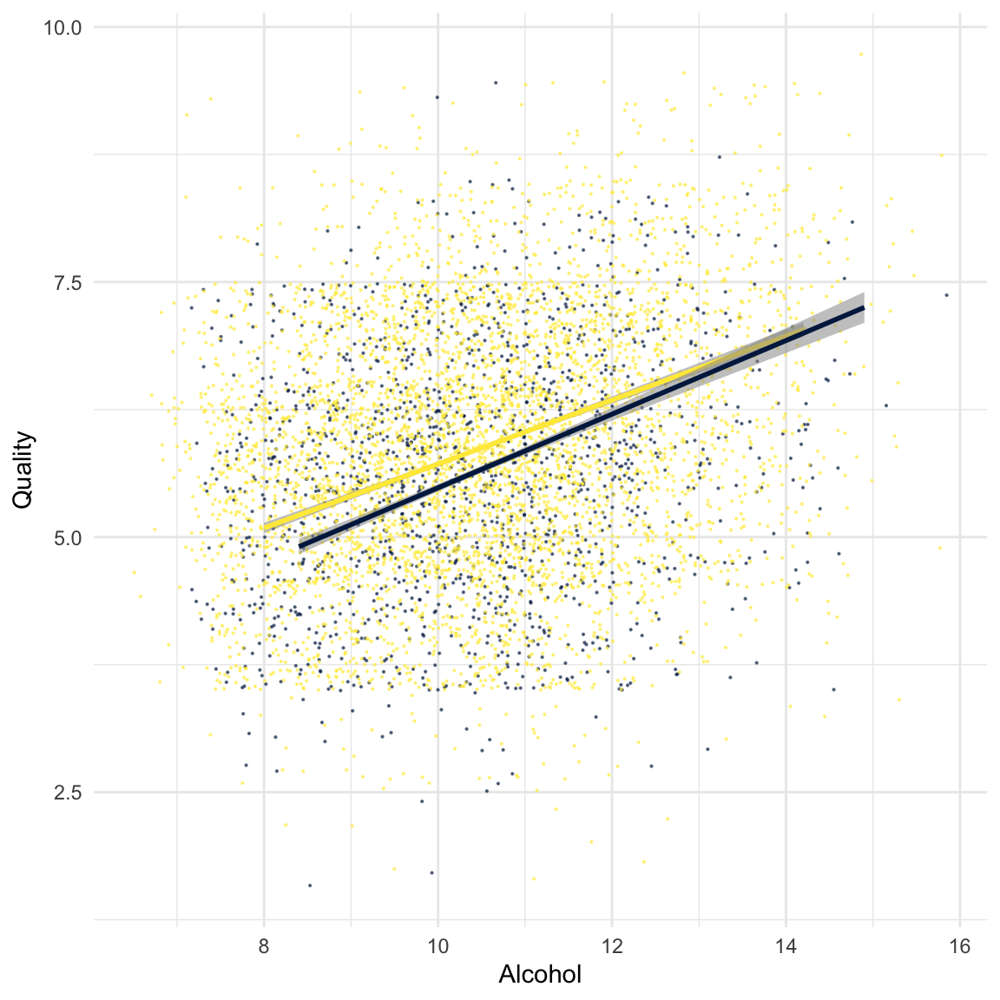
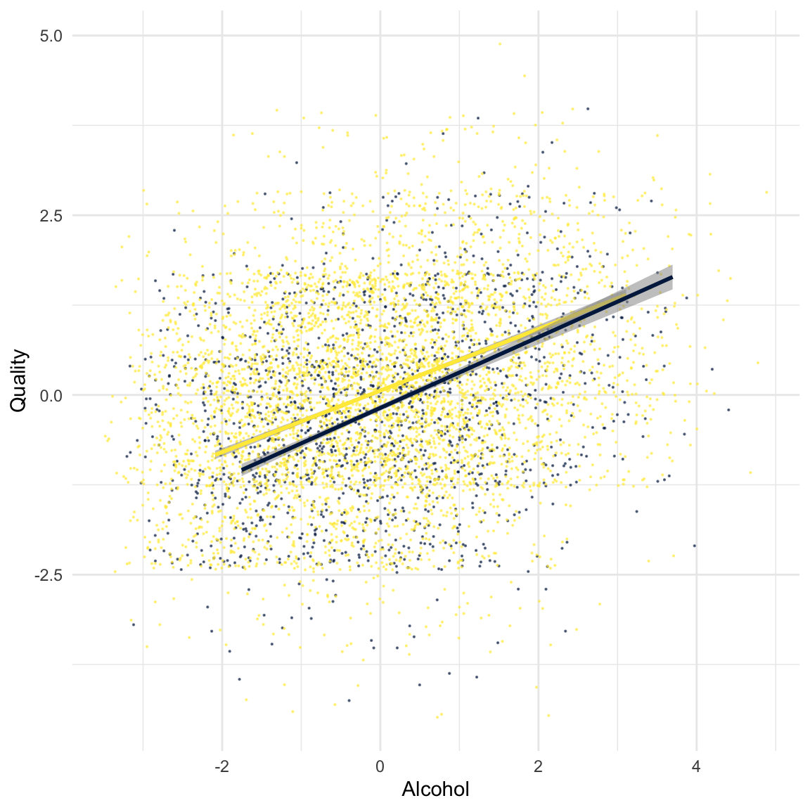

Statistics
|
Introduction to R The R Bootcamp |

|
from delinat.com
Overview
At the end of this practical you will be able to …
- use categorical variables as predictors in a regression
- know how to add an interaction effect and understand why it might be important to standardize your variables
Tasks
A - Setup
Open your
BernRBootcampR project. It should already have the folders1_Dataand2_Code. Make sure that the data files listed in theDatasetssection above are in your1_Datafolder.Using
library()load the set of packages for this practical listed in the Functions section above.
## Name
## Date
## Statistics Practical
library(XX)
library(XX)- For this practical we will use a dataset called
wine.csvwhich you will now import withread_csv().
# Read in the data
wine <- read_csv(file = "1_Data/wine.csv")- Execute the code below to ensure that all
charactervariables are converte to factors. This will help the statistical model to interpret categorical variables correctly.
# convert character to factor
wine <- wine %>% mutate_if(is.character, factor)B - Comparing groups: t-test versus regression
- In this part we will inspect the effect of
Colorof the wine, red or white, as a predictor forQuality. Use the code below to generate two vectors that include quality ratings for white and red wine.
# Qualitiy vectors by color
white <- wine %>% filter(Color == 'white') %>% pull(Quality)
red <- wine %>% filter(Color == 'red') %>% pull(Quality)- Use the
t.test()template below to compare the two vectors with a t-test. You do not have to save the result.
# t-test
t.test(x = XX, y = XX)# t-test
t.test(x = white, y = red)
Welch Two Sample t-test
data: white and red
t = 10, df = 2951, p-value <2e-16
alternative hypothesis: true difference in means is not equal to 0
95 percent confidence interval:
0.195 0.289
sample estimates:
mean of x mean of y
5.88 5.64 What does the output of the t-tests tell you about the difference between white and red wine in perceived quality? You will find the answer in the second line of the output that starts with
t=..and in the last line.White wine got a higher rating with
0.2419(difference of the two means) points more than red wine, this difference is significant. Now, try to get the same result with a regression. PredictQualitywithColor.
# Regression
wine_lm <- lm(formula = XX ~ XX,
data = XX)# Regression
wine_lm <- lm(formula = Quality ~ Color,
data = wine)Print the object and inspect the regression weights. Do you recognize some of these numbers?
Exactly! The regression weight for
Coloris the mean difference of red and white wines. What does the intercept represent? It represents the value of the category that got assigned 0 by R. As this variable ischaracterthe default is assigned to the category that comes earlier in the alphabet, i.e.,'red' < 'white'.Now use the
summary()function on your model object and compare the degrees of freedom, t- and p-values with the ones from the t-test above.
# summary
summary(wine_lm)
Call:
lm(formula = Quality ~ Color, data = wine)
Residuals:
Min 1Q Median 3Q Max
-2.878 -0.878 0.122 0.364 3.122
Coefficients:
Estimate Std. Error t value Pr(>|t|)
(Intercept) 5.6360 0.0217 259.92 <2e-16 ***
Colorwhite 0.2419 0.0250 9.69 <2e-16 ***
---
Signif. codes: 0 '***' 0.001 '**' 0.01 '*' 0.05 '.' 0.1 ' ' 1
Residual standard error: 0.867 on 6495 degrees of freedom
Multiple R-squared: 0.0142, Adjusted R-squared: 0.0141
F-statistic: 93.8 on 1 and 6495 DF, p-value: <2e-16- The values from the t-test do not exactly match the estimations for the weights in the regression. This stems from the fact that the
t.test()function allows the variance of the groups (red and white) to be different. In contrast regression always assumes that the variances between groups are the same. Re-calculate the t-test with the argumentvar.equal = TRUE.
# t-test
t.test(x = XX, y = XX, var.equal = XX)# t-test
t.test(x = white, y = red, var.equal = TRUE)
Two Sample t-test
data: white and red
t = 10, df = 6495, p-value <2e-16
alternative hypothesis: true difference in means is not equal to 0
95 percent confidence interval:
0.193 0.291
sample estimates:
mean of x mean of y
5.88 5.64 - Order has been resumed! All values in the t-test and the regression should be identical now.
C - Comparing groups: Coding
- The default in R for dummy coding is 0 for one feature and 1 for the other. Alternatively you can code effects, with the values -1 and 1. To see the difference and consequences of these different codings generate two new varibales in your dataset using the code below.
# Kodierungen der Color
wine <- wine %>% mutate(Color_dummy = ifelse(Color == 'red', 0, 1),
Color_effect = ifelse(Color == 'red', -1, 1))- Calculate two regressions now, one with dummy coding and the other with effect coding as the predictor and save them as new objects called
wine_dummyandwine_effect.
# Regression dummy
wine_dummy <- lm(formula = XX ~ XX,
data = XX)
# Regression effekt
wine_effect <- lm(formula = XX ~ XX,
data = XX)# Regression dummy
wine_dummy <- lm(formula = Quality ~ Color_dummy,
data = wine)
# Regression effekt
wine_effect <- lm(formula = Quality ~ Color_effect,
data = wine)Print these objects now and compare the weights. The dummy coding weights should be familiar. How do they compare to the effect coding? Do you see the connection?
The weights for color using effect coding is exactly half of the weight for dummy coding, to compensate for this change the intercept changed for exactly the same value. Verify the weights with the calculations done in the code snippet below.
# Dummy-Kodierung
mean(red) # intercept[1] 5.64mean(white) - mean(red) # gewicht Color[1] 0.242# EffekKodierung
(mean(red) + mean(white))/2 # intercept[1] 5.76mean(white) - (mean(red) + mean(white))/2 # gewicht Color[1] 0.121- Compare the models now with
summary(). Where can you find differences, what stays the same?
# Regression dummy
summary(wine_dummy)
Call:
lm(formula = Quality ~ Color_dummy, data = wine)
Residuals:
Min 1Q Median 3Q Max
-2.878 -0.878 0.122 0.364 3.122
Coefficients:
Estimate Std. Error t value Pr(>|t|)
(Intercept) 5.6360 0.0217 259.92 <2e-16 ***
Color_dummy 0.2419 0.0250 9.69 <2e-16 ***
---
Signif. codes: 0 '***' 0.001 '**' 0.01 '*' 0.05 '.' 0.1 ' ' 1
Residual standard error: 0.867 on 6495 degrees of freedom
Multiple R-squared: 0.0142, Adjusted R-squared: 0.0141
F-statistic: 93.8 on 1 and 6495 DF, p-value: <2e-16# Regression effekt
summary(wine_effect)
Call:
lm(formula = Quality ~ Color_effect, data = wine)
Residuals:
Min 1Q Median 3Q Max
-2.878 -0.878 0.122 0.364 3.122
Coefficients:
Estimate Std. Error t value Pr(>|t|)
(Intercept) 5.7570 0.0125 461.04 <2e-16 ***
Color_effect 0.1209 0.0125 9.69 <2e-16 ***
---
Signif. codes: 0 '***' 0.001 '**' 0.01 '*' 0.05 '.' 0.1 ' ' 1
Residual standard error: 0.867 on 6495 degrees of freedom
Multiple R-squared: 0.0142, Adjusted R-squared: 0.0141
F-statistic: 93.8 on 1 and 6495 DF, p-value: <2e-16- The coding (dummy or effect) has, with the exception of the weights scaling and the standard error, no influence on the t-value and the p-value. Only the intercept changes dramatically, because in the effect coding the intercept is further away from zero.
D - Interactions
- In the sections above we learned that white wine is preferred over red wine. Could it be the case that controlling for other variables might change this? Or could it be the case that this difference only excists under special circumstances, i.e., that there are moderators for the effect of color? Calculate a regression, that adds
Alcoholas a predictor using*. This will also calculate the interactions between the predictors.
# Regression mit Interaktion
wine_lm <- lm(formula = XX ~ XX * XX,
data = XX)# Regression mit Interaktion
wine_lm <- lm(formula = Quality ~ Color * Alcohol,
data = wine)Print the object and inspect the weights. How do you interpret these values?
You can interprete the weights in the following manner: Considering
Alcoholand the interaction white wines are rated.7points better than red wines. ConsideringColorand the interaction results an increase of one volume percent results in an increase of perceived quality of.36. ConsideringColorandAlcoholthe interaction, i.e., the product of the two predictors, leads to a change of-.05. This means that the effect ofAlcoholconsidering white wine is reduced for exactly this value. In other words, the effect ofColorfor wine with a lot of alcohol is smaller. Use the code below to visualize your results. Yellow means white wine, black red wine.
# Visualisierung
ggplot(data = wine,
aes(x = Alcohol, y = Quality, col = Color, alpha = .01)) +
scale_color_manual(values = viridis::cividis(2)) +
geom_jitter(width=2,height=1.5,size=.1) + theme_minimal() + theme(legend.position = 'none') +
geom_smooth(data = wine %>% filter(Color == 'white'), method = 'lm') +
geom_smooth(data = wine %>% filter(Color == 'red'), method = 'lm')`geom_smooth()` using formula 'y ~ x'
`geom_smooth()` using formula 'y ~ x'
Using
summary()check the t-values and p-values. Which predictors are significant?Yes - all three predictors are significant! t- and p-values are the most extreme for
Alcohol, but the weight forAlcoholis halfed. How can you explain this?Exactly! The weights are dependent on the scaling of the predictors! Re-calculate the regression, but with scaled predictors using the code below.
# Skalierungsfunktion
scale_it = function(x) (x - mean(x))/sd(x)
# Regression mit skalierten Prädiktoren
wine_lm <- lm(formula = XX ~ XX * XX,
data = XX %>% mutate_if(is.numeric, scale_it))# Skalierungsfunktion
scale_it = function(x) (x - mean(x))/sd(x)
# Regression mit skalierten Prädiktoren
wine_lm <- lm(formula = Quality ~ Color * Alcohol,
data = wine %>% mutate_if(is.numeric, scale_it))Print the object and inspect the weights. All values changed quite substantially. Especially
Alcoholdoubled its weight. How do you interpret these new weights, keeping in mind, that the scaling results in all variables having a standard deviation of 1?After scaling the weight can be interpreted as the changes in the standard deviation. For examples, a change of 1 standard deviation in
Alcoholresults in a change of.4928standard deviations inQuality. The intercept shows the biggest changes, how do you interpret this change?The intercept is the estimated mean of the criterion, given that all predictors are zero. Without scaling it is tricky to interpret, cause zero does not necessarily have to be included in any of the predictors. After scaling this changes and all predictors, with the exception of
Colorhave a mean of zero. This means the intercept represents a mean level ofAlcohol, red wine and no interaction through the standard deviation. You can see this in the visualization. Use the code below and find the point on the line whereAlcoholequals zero.
# Visualisierung
ggplot(data = wine %>% mutate_if(is.numeric, scale_it),
aes(x = Alcohol, y = Quality, col = Color, alpha = .01)) +
scale_color_manual(values = viridis::cividis(2)) +
geom_jitter(width=2,height=1.5,size=.1) + theme_minimal() + theme(legend.position = 'none') +
geom_smooth(data = wine %>% mutate_if(is.numeric, scale_it) %>% filter(Color == 'white'), method = 'lm') +
geom_smooth(data = wine %>% mutate_if(is.numeric, scale_it) %>% filter(Color == 'red'), method = 'lm')`geom_smooth()` using formula 'y ~ x'
`geom_smooth()` using formula 'y ~ x'
Using
summary()identify what changed regarding t-, p-values, standard error and R-squared?The main changes can be found for the variable
Color, which was not scaled! Before scaling ofAlcohol,Colorwas nearly perfectly correlated with the interaction, leading to an inflated standard error. Scaling reduced this correlation and the standard error is now of the level of the other predictors. In most models it is worth scaling the predictors (sometimes also the criterion), given that you are interested in the weights and significance levels.
Examples
# Regression mit R
library(tidyverse)
# Model:
# Sagt der Hubraum (displ) die pro gallone
# fahrbaren Meilen voraus?
hwy_mod <- lm(formula = hwy ~ displ,
data = mpg)
# Ergebnisse
summary(hwy_mod)
coef(hwy_mod)
# Gefittete Werte
hwy_fit <- fitted(hwy_mod)
hwy_fit
# Residuums
hwy_resid <- residuals(hwy_mod)
hwy_residDatasets
| Datei | Zeile | Spalte |
|---|---|---|
| wine.csv | 6497 | 13 |
wine.csv
The wine.csv file contains data of the Comissão De Viticultura Da Região Dos Vinhos Verdes, the official certification agency of Vinho Verde in Portugal for the years 2004 to 2007.
| Name | Description |
|---|---|
| Quality | Quality rating on a scale between 1-9 |
| Color | red or white wine |
| Dissolved_Acid | Concentration of acids dissolved in the wine |
| Free_Acid | Concentration of free acids |
| Citric_Acid | Citric acid in the wine |
| Residual_Sugar | Sugar concentration in the wine |
| Chloride | Chlorid concentration in the |
| Free_Sulfur_Dioxide | Free sulfur dioxide in the |
| Total_Sulfur_Dioxide | Total amount of sulfur dioxide |
| Density | Density of the wine |
| PH_Value | pH-Value of the wine. The smaller the more acidic. |
| Sulphate | Sulphate concentration of the wine |
| Alcohol | Alcohol in the wine in % |
Functions
Packages
| Package | Installation |
|---|---|
tidyverse |
install.packages("tidyverse") |
Functions
| Function | Package | Description |
|---|---|---|
lm |
stats |
Fit a linear model |
fitted |
stats |
Extract predicted values |
residuals |
stats |
Extract residuals |
Resources
Books
- Discovering Statistics with R excellent and entertaining overview on statistics